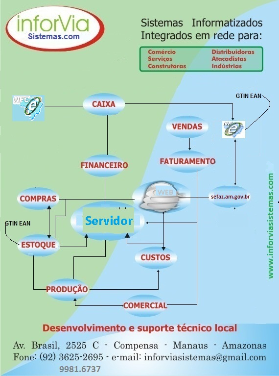

|  | Visualização do Diagrama Fluxo de Dados do projeto ERP INFORVIA. Alguns Módulos podem pertencer à um outro Setup de Atividade Econômica(Comércio Varejo, Distribuidora, Construtora, Indústria, Serviçõs, AT, Locação etc) |
|
Integra setores na empresa, com atualizações logística(estoque,compras,finaceiro, caixa) Faturamento(NFe,NFCe), Financeiro(receber, pagar, fluxo de ). Configurável por parâmetros, adapta-se às regra de negócios e modelo organizacional, podendo operar com código de barras EAN14, pré-vendas, Telemarketing, Balcão de atendimento, Checkout em rede local e Intranet com uso de tecnologia XML. |
|
 |
Nota Fiscal
Eletrônica(NF-e); Nota Fiscal Eletrônica Consumidor
(NFC-e); Encerramento Caixa Diário(Saldo inicial ,entradas , retiradas
e movimento, forma de pagamento). Integrado ao contas à Receber e
Fluxo de Caixa |
|
|
Cadastro dos produtos; Recebimento de mercadorias com Nota Fiscal de aquisição; C álculo do Custo de aquisição; Cálculo do Custo de Vendas, Cálculo do Preço de Venda; Histórico das movimentações com campos quantidades; Preços, datas e saldos; Integraçãoo para o contas a pagar e Contabilização pelo recebimento com Nota Fiscal de Entrada. Integraçãoo do pedido de compras compras com a entrada da nota fiscal de entrada. |
 |
Elabora
pedido completo com todoas as informações necessárias de
identificação do fornecedor, quantidades, descrição, especificação,
precos. prazos de entrega, transportadora, modal de trasnporte,
CIF/FOB, observações de faturamento, observações sobre leis, sobre
incentivos específicos para a Zona Franca de Manaus etc. O pedido é
gerado em PDF e pode ser encaminahdo ao fornecedor via email. Calcula a quantidade a
ser comprada/adquirida pela
média das vendas num período informado, com uma margem de
segurança
atribuída por você. A média é uma sugestão, você pode alterá-la ou
mantê-la. O pedido pode ser aproveitado para o recebimento da NFe de
compra, assim minimizando o retrabalho de digitaçãoo e melhorando
a
acurácia do estoque. Relatórios de acompanhamento estão disponíveis |
|
|
NF-e Nota Fiscal Eletrônica , NFC-e Nota Fiscal Consumidor Eletrônica.
Flexibilidades para atender requisitos de pregões, empenho , pedidos de
empresas certificadas com ISO etc. Integrado ao estoque,
contas à receber. Caixa gerencial integrado. Fluxo de caixa gerencial
integrado.
|
|
|
Contas à Pagar , Contas à Receber , Fluxo de Caixa, Integraçãoo com aquisição de mercadorias, Caixa de vendas, Faturamento, Contabilização. Consulta de Documentos baixados com observações específicas. Administração de Contratos e parcelas com vencimentos fixos e móveis. |
|
|
Pedidos de Compras, Gera estudo e susgestão de compras com cálculos da média de vendas incluídas direto no pedido, para adequação manaul. Faz a sugestão por marca ou segmento selecionado. Permite edição das sugestões. Aceita Cadastro com especificaçães tecnicas, itens avulsos e cadastro direto no pedido |
|
|
Recálculo do preço de venda para ajuste de mercadorias já em estoque e que constam no cadastro, por marca, segmento ou grupos. relatórios de comparação das margens x Custo , lista de preços, exporta para Excel |
|
|
Relatório
com Pré-Visualização: Estoque por marca; segmento; Localização;
Histórico das movimentações; Vendas no período; Comissões; Vendas
detalhadas por produto (data, documento(NF-e, CF, Requisição),
quantidade, preço de custo e venda); Histórico de Clientes, Resumo das
Vendas; Resumo do Caixa com as formas de pagamento. Curva ABC paretto |
|
Gráficos com o desempenho por produto,semanas, meses etc(em barras, linha , pizza). Para visualização e impressão. |
Inforvia
Nota Fiscal Eletrônica NF-e: Simples, rápido, flexível e adaptável.
Praticidade pela intergração das partes vendas, estoque, caixa, faturamento,
contas à receber. Edição exclusiva de itens na emissão, (marcas, NCM, CST,
CFOP,ICMS)
|
 |
Inforvia Nota Fiscal Consumidor Eletrônica NFC-e: Configuração para que apenas o caixa gere as NFC-e possa ser direto pelo vendedor, com passagem e impressão direta no caixa. Integrado, Simples, rápido, flexível e adaptável. Praticidade pela intergração das partes pedidos, orçamentos, vendas, estoque, caixa, faturamento, contas à receber. Projetado para agregar valor ao seu negócio com mínimo impacto operacional NT0022015 QrCode no XML NFCe Leia Mais.. |
 |
Cçdigo
GTIN EAN é obrigatório no uso da NFe. Por se tratar de um assunto novo
em termos informacionais. Algumas empresas ainda usam código interno
próprio.A inforvia desenvolveu um módulo exclusivo para tratar,
facilitar e reaproveitar a migração para o código GTIN |
|
|
.
Locação de Equipamentos com envio de proposta PDF ao cliente. Cadastro
dos equipam,entos com preços unitários por hora, dia, semana, mês etc.
Análise de locação por equipamento, movimento Diário, caixa. Integraçãoo
com contas à receber |
|
SCM Suply Chain Manager com o fornecedor |
Caso você seja fornecedor para empresa certificadas ISO, ou com
ERP com SCM - Supply Chain Manager por exemplo, solicite
configuração para inclusão da TAG Pedido e Item no Pedido no
XML da NFe gerado para o fornecedor, Exemplo em Leia Mais... |
 |
Fluxo
de caixa operacional. Trabalha o fluxo de caixa a partir do sistema
financeiro. Com flexibilidades para agrupamentos de contas afins numa
çnica
conta de fluxo. Visão em tela, gráficos e relatórios. Aceita cençrio de
investimento com taxa de projeção e desconto com çalculo do VPL |
 |
Inventçrio e
Ressuprimento. Manual sobre o funcionamento da função de
controle de itens inventariados para orientação aos vendedores e demais
atuantes no sistema de como proceder às mensagens orientativas
quanto a itens
em estoque mínimo e itens inventariados na elaboração da venda.
|
 |
Inforvia
Vendas2023 NFe4.X + NFCe4.x +Lei 12741/12 Valor aproximado correspondente à totalidade dos tributos +NT2015/002 Alteração CFOP 5403 para CFOP5405 +NT2015/002 QrCode no XML NFCe Inforvia Vendas2023 NFe4.x + NFCe4.x Lei 12741/12 valor aproximado correspondente à totalidade dos tributos Inforvia Sges Inforvia NFeCaixa. Versão atual com carta de correção, com otimização da emissão da Nfe Anydesk. Suporte remoto. Download e copie na área de trabalho. Acesse e gere uma chave em mostrar meu PC IBGE Municípios Códigos oficiais dos Munípios brasileiros para uso na NF-e href="https://ibge.gov.br/explica/codigos-dos-municipios.php">Unidanfe Com NFCe inforviaVendas, a senha ao suporte, selecione a aba NF-e e click em criar Munícipios. Aguarde a inclusão dos municípios no banco de dados  Manual NF-e em
http://www.nfe.fazenda.gov.br/portal/principal.aspx Manual NF-e em
http://www.nfe.fazenda.gov.br/portal/principal.aspx |


{kind=link}
{kind=link}
Informatização
comercial, vendas com emissão de NFe e NFCe, transportadoras com CTe,
construtoras, instaladoras, locação de equipamentos, ordem de
serviços(contrôle de O.S) para assistências Tecnicas, Climatização
SPLIT, Motores, Compressores etc
Telefone WhatsApp
: (92) 98263-5637
Endereão
: Av. Brasil, 2525C - Compensa Cep 69.036-110
Manaus.Amazonas